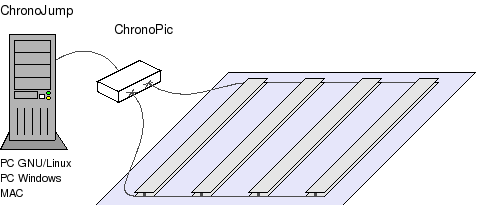
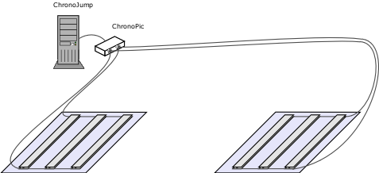

Einleitung | Printable version(translate) |
ChronoJump ist ein komplettes Systemmultiplatform für das Maß, das Management und die Statistik der temporären Phasen des Sprunges.
Attention! English page is more updated than this: go to english page
ChronoJump gebrauch eine Kontakte Plattform mit zwei Fällen (In-plattform, Aus-plattform) und ein gedruckter Stromkreis timekeeperAnzeige-sichel entwarf, um die exakten und vertrauenswürdigen Maße zu erhaltenDie Flugzeit eines Sprunges ist Anzeige des Aufzugs des Schwerpunktes (wie lang, da die Position des Ausganges und der Ankunft die gleiche ist).

Entwurf von Software des Managements (ChronoJump) + Chronometer (Chronopic) + Plattform der Kontakte.
ChronoJump könnte auch für das Maß der Zeit eines Rennen verwendet mit Intervallen [and rhythms, pending to translate].
